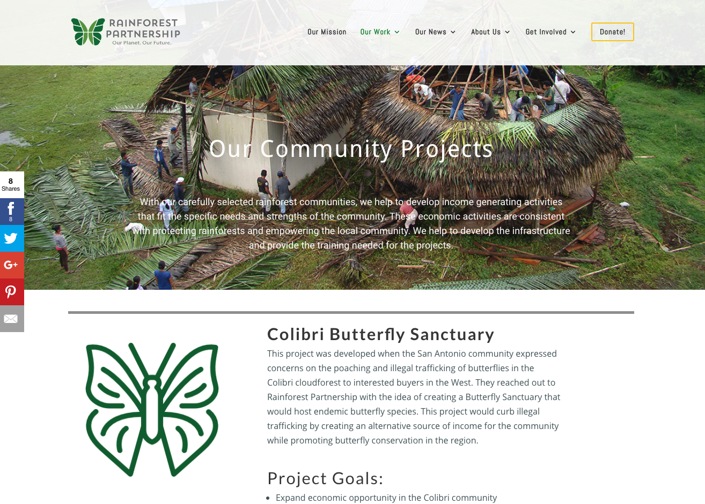

Rainforest Partnership
The Project
Rainforest Partnership is a global non-profit committed to saving the rainforests and preventing deforestation. They needed a fresh website to showcase all the amazing work they are doing.
The Old Website

The New, Updated Website
What I Did
I met with the executive director and other key stakeholders to gain information about what they wanted the outcome of the new site to look like. I got together with the executive director of the organization and together we whiteboarded key features, such as the main nav bar. Throughout the project, I have served as a liason between stakeholders and team members (such as content developers, content editors, marketing and design team, and photographers) and have conducted meetings with the other two developer interns in order to coordinate the project.
We built out the site to match the specs provided, implementing feedback from the board of directors, marketing team, staff of the organization, and users. The team agreed that using WordPress with the Elegant Themes Divi Theme would enable Rainforest Partnership staff to easily create new content like blog updates.
I implemented a PayPal payment feature which enabled users to make donations directly on the site using PayPal.
Future Plans
The site is still a work in progress. In the near future, we will be working on the following: compressing all images to improve site load time, renaming all images to improve SEO, improving mobile experience and competing additinal user testing, and integrating Sumo and Yoast plug-ins and Emma email services.